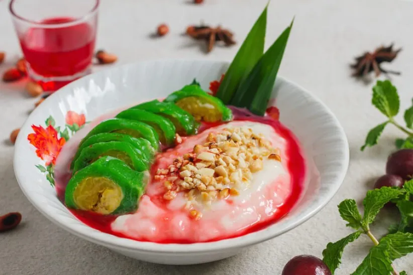

Es Pisang Ijo
Resep Membuat Es Pisang Ijo untuk disantap sehar-hari
Bahan-bahan
- Pisang Kepok secukupnya
- 115 gram Tepung Protein Sedang
- 50 gram Gula
- 1/4 sdt Garam
- 125 gram Tepung Beras
- 500 ml Air
- 65 ml Sasa Santan Cair Omega-3
- Pasta Pandan secukupnya
Bahan VLA
- 100 gram Tepung Beras
- 1/2 sdt Garam
- 750 ml Air
- 65 ml Sasa Santan Cair Omega-3
- Daun Pandan secukupnya
- Sirup cocopandan sesuai selera
Cara Membuat
- Kukus pisang terlebih dahulu sampai matang.
- Siapkan wadah lalu campurkan tepung terigu, tepung beras, pasta pandan, gula, santan dan beri air secukupnya.
- Aduk semua bahan sampai tercampur.
- Saring adonan lalu masak sampai menggumpal.
- Ambil sebagian adonan lalu pipihkan.
- Siapkan pisang lalu gulung dengan adonan.
- Kukus sampi matang.